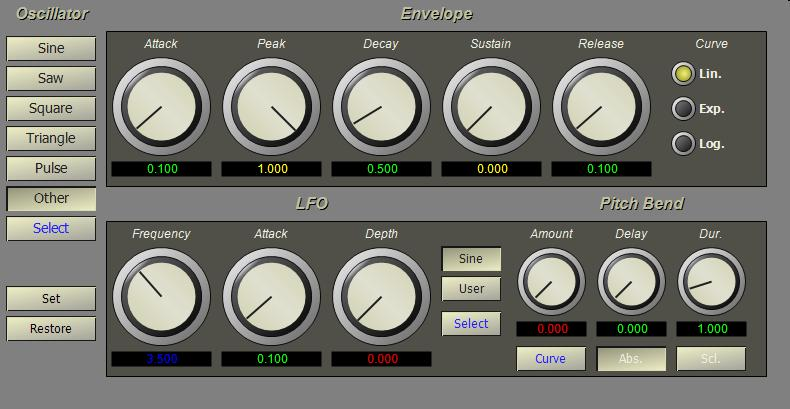

Right-click the Instrument project item and select New from the pop-up menu. The instrument property form is displayed.

Enter the name "Plink" in the name field and select "Tone" from the instrument type list. Press OK to close the form. The editor for a Tone instrument is opened automatically.
The Tone instrument is a pre-patched synthesis instrument consisting of a wavetable oscillator, ADSR envelope generator, LFO vibrato effect and pitch bend effect. Tone implements a simple form of additive synthesis. The waveform we created in Step II is a blend of three partials and we can use that waveform for the oscillator in the Tone instrument. Press the Select button in the editor to view the available waveforms. Select the "Wiggly" item in the list and then press OK to close the form.
Set the envelope using the top row of knobs. Set the attack to 0.01, peak to 1.0, decay 0.5, sustain 0.0 and release 0.1. Leave the other instrument settings at their default values.
To preview the instrument sound, click on the "On" lamp above the keyboard at the bottom of the screen. This will activate the keyboard for immediate playback. Make sure the Plink instrument is selected in the instrument list at the left of the keyboard and then use the mouse to click on keys on the keyboard. If you don't hear any sound, make sure your computer's sound level is up and that the speakers are on. If the sound is distorted, try turning down the sound level. In general, leave the computer's sound levels at a middle range when working in BasicSynth.
Close the Tone instrument editor.
(For more information on instrument editors, see the Instruments overview)
Next: Create the score...